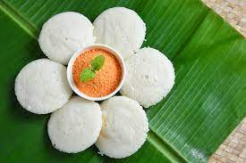

Idly is a traditional South Indian steamed rice cake made from fermented rice and urad dal batter. It's light, fluffy, and perfect for a healthy breakfast or snack.
Ingredients
- 1 cup Rice
- 1/4 cup Urad Dal (Black Lentils)
- 1/2 tsp Fenugreek Seeds
- 1/2 tsp Salt
- Water (as needed)
Step-by-Step Instructions
- Rinse rice and urad dal thoroughly. Soak them in water for at least 8 hours or overnight.
- Drain and blend the rice, urad dal, and fenugreek seeds into a smooth batter. Add water as needed.
- Transfer the batter to a large bowl, cover, and let it ferment in a warm place for 12-24 hours.
- Once fermented, stir the batter and add salt.
- Pour the batter into idly molds and steam for 10-15 minutes or until cooked through.
- Serve hot with coconut chutney and sambar.